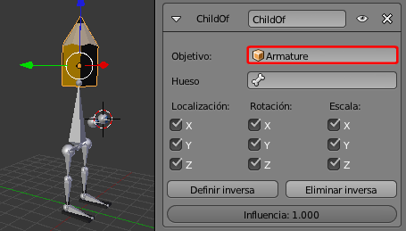
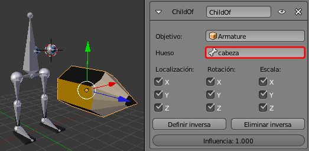
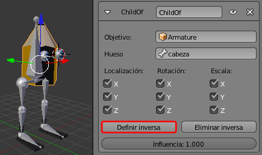
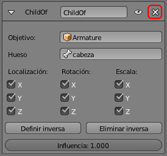
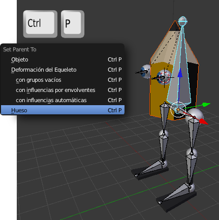
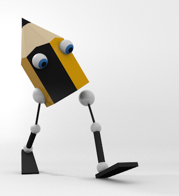

Skinning
Llamamos skinning al proceso por el cual se asigna el rigging a una malla. Hay muchas posibilidades; desde las que permiten la deformación de la malla hasta las que permiten a los objetos comportarse como sólidos al estilo de una mecánica restringida. En esencia el skinning es una relación de parentesco entre la malla y el hueso donde el que manda es este último.
Vamos a hacer un skinning muy sencillo del personaje que acabamos de crear.
Seleccionamos la malla cabeza y le aplicamos una Restricción  de tipo Hijo de.
de tipo Hijo de.
Como en casi todas las restricciones hace falta definir un Objetivo. En este caso el objeto Armature (nombre del esqueleto por defecto).
La malla cabeza se ha descolocado pero no le damos importancia. Lo que si es importante es que debajo del campo Objetivo se ha creado uno nuevo llamado Hueso; debemos seleccionar para ese campo el hueso cabeza.
De nuevo la malla cabeza se descoloca. Tampoco tiene importancia porque ahora vamos a pulsar Definir inversa y se corrige el problema.

Si pasamos el esqueleto a Modo Posado  y rotamos el hueso cabeza, la malla emparentada obedece y copia la transformación.
y rotamos el hueso cabeza, la malla emparentada obedece y copia la transformación.
El camino corto
La restricción anterior es un emparentamiento complejo que permite controlar muchos parámetros. Pero nosotros necesitamos un emparentamiento más sencillo y directo. Damos por hecho que no hemos creado la restricción anterior o que la hemos eliminado.
- Pasamos el esqueleto a Modo Posado
 .
.
- Seleccionamos Modo Objeto
 la malla cabeza.
la malla cabeza.
- Selecionamos el hueso cabeza (al haberlo dejado en Modo Posado quedará azul.)
- Usamos el atajo "Control_P" y en el menú emergente optamos por Hueso.

Con esto hemos conseguido lo mismo que con el proceso de la restricción aunque ahora no disponemos de un cuadro para configurar parámetros.
La relación de parentesco que hemos creado aparece en el panel de Objeto  de la la malla cabeza en la botonera Relaciones.
de la la malla cabeza en la botonera Relaciones.
Aquí es posible cambiar de hueso, por ejemplo.
Continuamos con este método corto haciendo los siguientes emparentamientos:
- El objeto ojo.L hijo del hueso ojo.L.
- El objeto ojo.R hijo del hueso ojo.R.
- El objeto cadera_femur.L hijo del hueso femur.L.
- El objeto cadera_femur.R hijo del hueso femur.R.
- El objeto rodilla_tibia.L hijo del hueso tibia.L.
- El objeto rodilla_tibia.R hijo del hueso tibia.R.
- El objeto tobilla_pie.L hijo del hueso pie.L.
- El objeto tobilla_pie.R hijo del hueso pie.R.
Cuando acabamos el skinning es muy fácil crear una pose como esta en la que Lapintef, además de dar un paso adelante, es capaz de mirar al suelo. Lo único que hemos hecho ha sido rotar ("R") huesos en Modo Posado  .
.
No todo es perfecto
¿Qué ocurre si rotamos ("S") el hueso cabeza desde un punto de vista frontal?
Nada deseable, sin duda. La cabeza se separa de las piernas. Hay que poner solución a este problema.
Restituir la pose
Ya hemos dicho que el trabajo de rigging es independiente del de diseño y animación. Lo habitual es tener el personaje en otro .blend y añadirlo a nuestro proyecto. Nunca debe perderse el personaje en su pose de rigging.
Después de jugar a hacer poses se restituye la pose original seleccionando todos los huesos ("A") en Modo Posado  y usando el menú Pose/Limpiar transformación/Todo.
y usando el menú Pose/Limpiar transformación/Todo.
Jerga final
A pesar de que está claramente diferenciado lo que es el rigging y lo que es el skinning en el mundo del diseño 3D se suele llamar rigging al producto final del personaje, con todas sus restricciones, asignación de mallas...